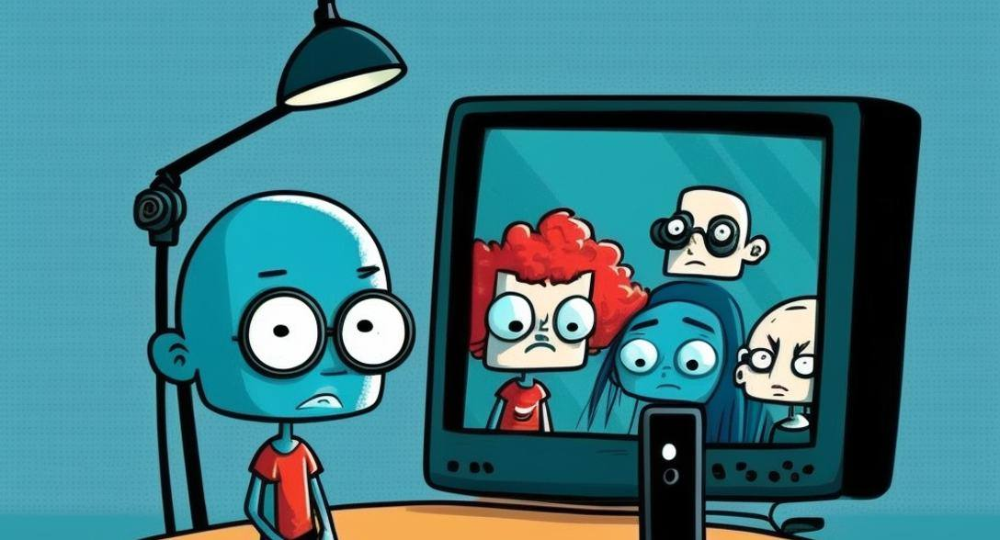

The question
Spreadsheets Without Fear, an online course
What would it take to keep your own numbers?
For small business owners who avoid spreadsheets. Here is how it works, one idea at a time.

The analogy
A spreadsheet is a shoebox with dividers.
Every receipt still goes in, but in a labelled slot. One thing per row. One kind of thing per column.
Worked example
Here is this course, as a sheet.
| A | B | |
|---|---|---|
| 1 | Lessons | 6, weekly |
| 2 | Where | Live on Zoom |
| 3 | When | Thursdays, 7pm Eastern |
| 4 | Length | 90 minutes each |
| 5 | Starts | Thursday 14 January 2027 |
| 6 | Group size | At most 20 people |
Step through it
- Step 1Column A says what a value is.
- Step 2Column B holds the value.
- Step 3Read across one row: one fact. Row 5: it starts Thursday 14 January 2027.
- Step 4
Now use your own numbers. You build three sheets:
- a cash-flow sheet
- an invoice tracker
- a price calculator
A harder case
What if you think you are bad with money?
The teacher, Priya Shah, a bookkeeper for 12 years, started the course because of this.
"In my first year as a bookkeeper, a florist brought me a shoebox of receipts on 29 April, two days before her tax deadline. She cried at my desk. She was not bad with money. Nobody had ever shown her a spreadsheet slowly."
Priya Shah
Check yourself
Try these before you peek.
In the sheet above, which cell holds the group size?
B6: at most 20 people.
What if I miss a lesson?
Each recording stays available for 30 days.
What does it cost?
$249. $199 if you register before 31 December 2026.
Has anyone done this before?
Four groups, 71 people, since March 2025. 52 of the 71 answered a survey after the course. 44 of the 52 said they now update their own numbers every week. 39 of the 52 said they had stopped sending their receipts to someone else to sort.
Recap
The shoebox, with dividers.
Six Thursdays, three sheets, your own numbers.
Register on the course page"I used to dread the end of the month. Now it takes me twenty minutes on a Sunday."
Marta, who runs a two-person cleaning company
[needs: registration link]